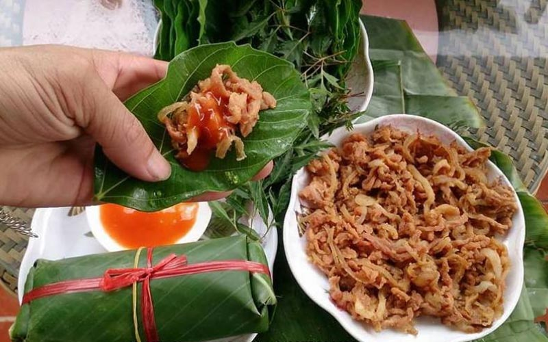
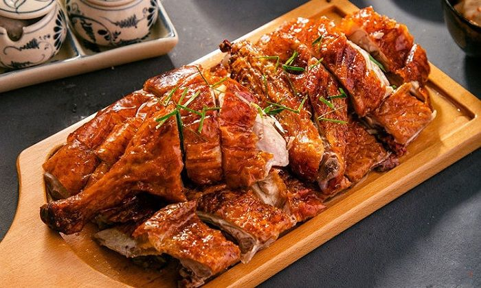

Nam nướng Hữu Lũng
Nhắc tới Lạng Sơn, món phổ biến nhất mà nhiều người hay giới thiệu với bạn đó là vịt quayvà thịt lợn quay. Thêm vào đó, là món măng ớt chua, gần mùa thu thì chắc chắn là món na núi đá quả to thơm ngon nức tiếng. Một lần ghé qua, với từng đó món đã làm bạn xao xuyến muốn quay trở lại. Nhưng bạn đừng vội vàng, xứ Lạng còn rất nhiều món độc đáo đang chờ bạn khám phá và thưởng thức.

Vịt quay Lạng Sơn
Vịt quay Lạng Sơn là một trong những đặc sản mang đậm bản sắc của núi rừng Đông Bắc. Món ăn trở nên đặc biệt, hấp dẫn du khách gần xa nhờ cách chế biến cầu kỳ cùng công thức nước chấm riêng độc đáo.